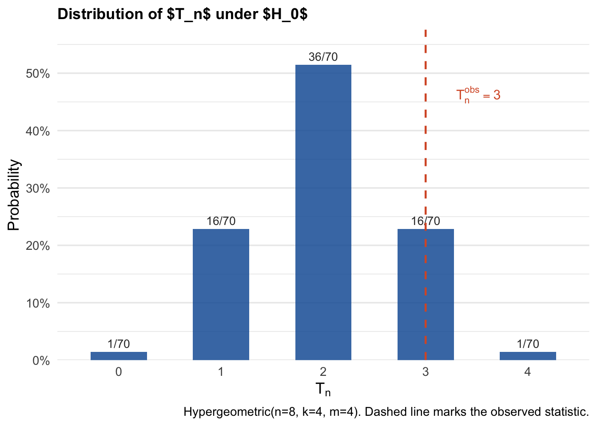

Code
Y <- c(0, 1, 1, 1, 0, 1, 0, 0)
W <- c(1, 1, 1, 1, 0, 0, 0, 0)
T_obs <- sum(W * Y)
cat("Observed test statistic: T_obs =", T_obs)Observed test statistic: T_obs = 3Consider a sample of \(n = 8\) units (beer cups in our example). In class, we represented the two brands as 0 or 1. Thus, for each cup \(i\), we have \(W_i \in \{0,1\}\). The lady tasting beer reports her )educated) guess for each cup \(i\), so also a binary reporting \(Y_i \in \{0,1\}\). Suppose we the observed report \(Y\) and true types \(W\) (unknown to the lady) are:
\[Y = (0,1,1,1,0,1,0,0), \qquad W = (1,1,1,1,0,0,0,0).\]
The null hypothesis is that \(Y\) and \(W\) are statistically independent:
\[H_0: Y \perp W\]
meaning that the lady cannot distinguish the two labels (her guesses are completely uninformative of the true types).
While the vector \(Y\) is treated as a random variable, once the reporting is made, we treat it as fixed. What is random and entirely up to the experiment design is the sequence of types \(W\). This allows us to construct an exact null distribution by varying \(W\) over all its possible realizations, with no asymptotic approximation required.
A natural test statistic:
\[T_n(W, Y) \;=\; \sum_{i=1}^n W_i Y_i,\]
which counts the number of agreements between educated guesses and true types. Notice that large values of \(T_n\) provide evidence against \(H_0\).
Observed value. With the data above:
\[T_n^{\mathrm{obs}} = W^\top Y = 1\cdot 0 + 1\cdot 1 + 1\cdot 1 + 1\cdot 1 + 0\cdot 0 + 0\cdot 1 + 0\cdot 0 + 0\cdot 0 = 3.\]
Y <- c(0, 1, 1, 1, 0, 1, 0, 0)
W <- c(1, 1, 1, 1, 0, 0, 0, 0)
T_obs <- sum(W * Y)
cat("Observed test statistic: T_obs =", T_obs)Observed test statistic: T_obs = 3Under \(H_0\), every vector \(w \in \{0,1\}^8\) with exactly four 1s and four 0s was equally likely to have been the realized treatment assignment (compare this with the way we did it in class). Define:
\[\mathbf{G}_n \;=\; \bigl\{ w \in \{0,1\}^8 : \textstyle\sum_i w_i = 4 \bigr\}.\]
The cardinality of \(\mathbf{G}_n\) is \(M := \#\{\mathbf{G}_n\} = \binom{8}{4} = 70\).
# Generate all elements of G_n: vectors of length 8 with exactly four 1s
G_n <- as.data.frame(t(combn(8, 4))) |>
apply(1, function(idx) {
w <- integer(8)
w[idx] <- 1L
w
}) |>
t()
cat("Number of elements in G_n:", nrow(G_n))Number of elements in G_n: 70The table below displays the complete set \(\mathbf{G}_n\). Each row is a distinct treatment assignment \(w \in \mathbf{G}_n\), and the last column reports \(T_n(w, Y) = \sum_i w_i Y_i\).
Y <- c(0, 1, 1, 1, 0, 1, 0, 0)
# Compute T_n(w, Y) for each permutation
T_vals <- apply(G_n, 1, function(w) sum(w * Y))
# Build display table
perm_df <- as.data.frame(G_n)
colnames(perm_df) <- paste0("w", 1:8)
perm_df$T_n <- T_vals
perm_df$Permutation <- seq_len(nrow(perm_df))
perm_df <- perm_df[, c("Permutation", paste0("w", 1:8), "T_n")]
knitr::kable(
perm_df,
align = "c",
caption = "All 70 elements of $\\mathbf{G}_n$ and the corresponding test statistic $T_n(w, Y)$."
)| Permutation | w1 | w2 | w3 | w4 | w5 | w6 | w7 | w8 | T_n |
|---|---|---|---|---|---|---|---|---|---|
| 1 | 1 | 1 | 1 | 1 | 0 | 0 | 0 | 0 | 3 |
| 2 | 1 | 1 | 1 | 0 | 1 | 0 | 0 | 0 | 2 |
| 3 | 1 | 1 | 1 | 0 | 0 | 1 | 0 | 0 | 3 |
| 4 | 1 | 1 | 1 | 0 | 0 | 0 | 1 | 0 | 2 |
| 5 | 1 | 1 | 1 | 0 | 0 | 0 | 0 | 1 | 2 |
| 6 | 1 | 1 | 0 | 1 | 1 | 0 | 0 | 0 | 2 |
| 7 | 1 | 1 | 0 | 1 | 0 | 1 | 0 | 0 | 3 |
| 8 | 1 | 1 | 0 | 1 | 0 | 0 | 1 | 0 | 2 |
| 9 | 1 | 1 | 0 | 1 | 0 | 0 | 0 | 1 | 2 |
| 10 | 1 | 1 | 0 | 0 | 1 | 1 | 0 | 0 | 2 |
| 11 | 1 | 1 | 0 | 0 | 1 | 0 | 1 | 0 | 1 |
| 12 | 1 | 1 | 0 | 0 | 1 | 0 | 0 | 1 | 1 |
| 13 | 1 | 1 | 0 | 0 | 0 | 1 | 1 | 0 | 2 |
| 14 | 1 | 1 | 0 | 0 | 0 | 1 | 0 | 1 | 2 |
| 15 | 1 | 1 | 0 | 0 | 0 | 0 | 1 | 1 | 1 |
| 16 | 1 | 0 | 1 | 1 | 1 | 0 | 0 | 0 | 2 |
| 17 | 1 | 0 | 1 | 1 | 0 | 1 | 0 | 0 | 3 |
| 18 | 1 | 0 | 1 | 1 | 0 | 0 | 1 | 0 | 2 |
| 19 | 1 | 0 | 1 | 1 | 0 | 0 | 0 | 1 | 2 |
| 20 | 1 | 0 | 1 | 0 | 1 | 1 | 0 | 0 | 2 |
| 21 | 1 | 0 | 1 | 0 | 1 | 0 | 1 | 0 | 1 |
| 22 | 1 | 0 | 1 | 0 | 1 | 0 | 0 | 1 | 1 |
| 23 | 1 | 0 | 1 | 0 | 0 | 1 | 1 | 0 | 2 |
| 24 | 1 | 0 | 1 | 0 | 0 | 1 | 0 | 1 | 2 |
| 25 | 1 | 0 | 1 | 0 | 0 | 0 | 1 | 1 | 1 |
| 26 | 1 | 0 | 0 | 1 | 1 | 1 | 0 | 0 | 2 |
| 27 | 1 | 0 | 0 | 1 | 1 | 0 | 1 | 0 | 1 |
| 28 | 1 | 0 | 0 | 1 | 1 | 0 | 0 | 1 | 1 |
| 29 | 1 | 0 | 0 | 1 | 0 | 1 | 1 | 0 | 2 |
| 30 | 1 | 0 | 0 | 1 | 0 | 1 | 0 | 1 | 2 |
| 31 | 1 | 0 | 0 | 1 | 0 | 0 | 1 | 1 | 1 |
| 32 | 1 | 0 | 0 | 0 | 1 | 1 | 1 | 0 | 1 |
| 33 | 1 | 0 | 0 | 0 | 1 | 1 | 0 | 1 | 1 |
| 34 | 1 | 0 | 0 | 0 | 1 | 0 | 1 | 1 | 0 |
| 35 | 1 | 0 | 0 | 0 | 0 | 1 | 1 | 1 | 1 |
| 36 | 0 | 1 | 1 | 1 | 1 | 0 | 0 | 0 | 3 |
| 37 | 0 | 1 | 1 | 1 | 0 | 1 | 0 | 0 | 4 |
| 38 | 0 | 1 | 1 | 1 | 0 | 0 | 1 | 0 | 3 |
| 39 | 0 | 1 | 1 | 1 | 0 | 0 | 0 | 1 | 3 |
| 40 | 0 | 1 | 1 | 0 | 1 | 1 | 0 | 0 | 3 |
| 41 | 0 | 1 | 1 | 0 | 1 | 0 | 1 | 0 | 2 |
| 42 | 0 | 1 | 1 | 0 | 1 | 0 | 0 | 1 | 2 |
| 43 | 0 | 1 | 1 | 0 | 0 | 1 | 1 | 0 | 3 |
| 44 | 0 | 1 | 1 | 0 | 0 | 1 | 0 | 1 | 3 |
| 45 | 0 | 1 | 1 | 0 | 0 | 0 | 1 | 1 | 2 |
| 46 | 0 | 1 | 0 | 1 | 1 | 1 | 0 | 0 | 3 |
| 47 | 0 | 1 | 0 | 1 | 1 | 0 | 1 | 0 | 2 |
| 48 | 0 | 1 | 0 | 1 | 1 | 0 | 0 | 1 | 2 |
| 49 | 0 | 1 | 0 | 1 | 0 | 1 | 1 | 0 | 3 |
| 50 | 0 | 1 | 0 | 1 | 0 | 1 | 0 | 1 | 3 |
| 51 | 0 | 1 | 0 | 1 | 0 | 0 | 1 | 1 | 2 |
| 52 | 0 | 1 | 0 | 0 | 1 | 1 | 1 | 0 | 2 |
| 53 | 0 | 1 | 0 | 0 | 1 | 1 | 0 | 1 | 2 |
| 54 | 0 | 1 | 0 | 0 | 1 | 0 | 1 | 1 | 1 |
| 55 | 0 | 1 | 0 | 0 | 0 | 1 | 1 | 1 | 2 |
| 56 | 0 | 0 | 1 | 1 | 1 | 1 | 0 | 0 | 3 |
| 57 | 0 | 0 | 1 | 1 | 1 | 0 | 1 | 0 | 2 |
| 58 | 0 | 0 | 1 | 1 | 1 | 0 | 0 | 1 | 2 |
| 59 | 0 | 0 | 1 | 1 | 0 | 1 | 1 | 0 | 3 |
| 60 | 0 | 0 | 1 | 1 | 0 | 1 | 0 | 1 | 3 |
| 61 | 0 | 0 | 1 | 1 | 0 | 0 | 1 | 1 | 2 |
| 62 | 0 | 0 | 1 | 0 | 1 | 1 | 1 | 0 | 2 |
| 63 | 0 | 0 | 1 | 0 | 1 | 1 | 0 | 1 | 2 |
| 64 | 0 | 0 | 1 | 0 | 1 | 0 | 1 | 1 | 1 |
| 65 | 0 | 0 | 1 | 0 | 0 | 1 | 1 | 1 | 2 |
| 66 | 0 | 0 | 0 | 1 | 1 | 1 | 1 | 0 | 2 |
| 67 | 0 | 0 | 0 | 1 | 1 | 1 | 0 | 1 | 2 |
| 68 | 0 | 0 | 0 | 1 | 1 | 0 | 1 | 1 | 1 |
| 69 | 0 | 0 | 0 | 1 | 0 | 1 | 1 | 1 | 2 |
| 70 | 0 | 0 | 0 | 0 | 1 | 1 | 1 | 1 | 1 |
Under \(H_0\) with a uniformly random assignment over \(\mathbf{G}_n\), the test statistic \(T_n\) follows a Hypergeometric distribution:
\[T_n \;\sim\; \mathrm{Hypergeometric}(n, k, m), \quad n = 8,\; k = 4,\; m = 4.\]
This is because \(T_n = \sum_{i=1}^n W_i Y_i\) counts the overlap between a randomly drawn set of 4 treated indices and a fixed set of 4 units with \(Y_i = 1\).
dist_df <- data.frame(t = T_vals) |>
count(t) |>
mutate(
prob = n / sum(n),
cum_prob = cumsum(prob),
label = paste0(n, "/70")
)
ggplot(dist_df, aes(x = factor(t), y = prob)) +
geom_col(fill = "#185FA5", alpha = 0.85, width = 0.55) +
geom_text(aes(label = label), vjust = -0.5, size = 3.5, color = "#333333") +
geom_vline(xintercept = which(levels(factor(dist_df$t)) == as.character(T_obs)),
linetype = "dashed", color = "#D85A30", linewidth = 0.8) +
annotate("text", x = which(levels(factor(dist_df$t)) == as.character(T_obs)) + 0.3,
y = max(dist_df$prob) * 0.9,
label = expression(T[n]^obs == 3),
color = "#D85A30", size = 4, hjust = 0) +
scale_y_continuous(labels = scales::percent_format(accuracy = 1), expand = expansion(mult = c(0, 0.12))) +
labs(
x = expression(T[n]),
y = "Probability",
title = "Distribution of $T_n$ under $H_0$",
caption = "Hypergeometric(n=8, k=4, m=4). Dashed line marks the observed statistic."
) +
theme_minimal(base_size = 13) +
theme(
plot.title = element_text(face = "bold", size = 13),
panel.grid.major.x = element_blank()
)
Since we know the distribution of \(T_n\), we can tabulate the probabilities.
knitr::kable(
dist_df |> select(t, n, prob, cum_prob) |>
rename(`$t$` = t, `Count` = n, `$\\mathrm{P}[T_n = t]$` = prob,
`$\\mathrm{P}[T_n \\leq t]$` = cum_prob) |>
mutate(across(where(is.numeric), ~round(., 4))),
align = "c",
caption = "Distribution of $T_n$."
)| \(t\) | Count | \(\mathrm{P}[T_n = t]\) | \(\mathrm{P}[T_n \leq t]\) |
|---|---|---|---|
| 0 | 1 | 0.0143 | 0.0143 |
| 1 | 16 | 0.2286 | 0.2429 |
| 2 | 36 | 0.5143 | 0.7571 |
| 3 | 16 | 0.2286 | 0.9857 |
| 4 | 1 | 0.0143 | 1.0000 |
and calculate the critical values for any fixed nominal level \(\alpha\in(0,1)\), denoted \(\hat{c}_n(1-\alpha)\). That is, \(\hat{c}_n(1-\alpha)\) is the smallest \(t\) in the support of \(T_n\) such that the cumulative distribution function (CDF) of the distribution exceeds \(1 - \alpha\):
\[\hat{c}_n(1 - \alpha) = \inf\bigl\{ t \in \{0, \ldots, 4\} : \mathrm{P}[T_n \leq t] \geq 1 - \alpha \bigr\}.\]
For \(\alpha = 0.05\), \(\hat{c}_n(0.95)=3\). Since \(T_n^{\mathrm{obs}} = 3 \not> 3\), we do not reject \(H_0\) at level \(\alpha = 0.05\).
Let \(T_n^{(1)} \leq T_n^{(2)} \leq \cdots \leq T_n^{(70)}\) denote the order statistics of \(\{T_n(w, Y) : w \in \mathbf{G}_n\}\).
Fix a nominal level \(\alpha \in (0,1)\). Define:
\[k \;=\; M - \lfloor M\alpha \rfloor,\]
where \(\lfloor \cdot \rfloor\) denotes the floor function. The permutation critical value is then defined as the \(k\)-th order statistic:
\[\hat{c}_n(1 - \alpha) \;:=\; T_n^{(k)}.\]
For \(\alpha = 0.05\):
\[k = 70 - \lfloor 70 \times 0.05 \rfloor = 70 - 3 = 67, \qquad \hat{c}_n(0.95) = T_n^{(67)} = 3.\]
alpha <- 0.05
M <- nrow(G_n)
k <- M - floor(M * alpha)
c_hat <- sort(T_vals)[k]
cat(sprintf("alpha = %.2f | M = %d | k = %d | c_hat(1-alpha) = %d\n",
alpha, M, k, c_hat))alpha = 0.05 | M = 70 | k = 67 | c_hat(1-alpha) = 3So we obtained the same critical value by brute force. Decision rule. Reject \(H_0\) if and only if \(T_n^{\mathrm{obs}} > \hat{c}_n(1-\alpha)\).
Since \(T_n^{\mathrm{obs}} = 3 \not> 3\), we do not reject \(H_0\) at level \(\alpha = 0.05\).
The permutation test achieves exact finite-sample size control. That is, for any \(\alpha \in (0,1)\) and regardless of the distribution of \(Y\):
\[\mathrm{P}_{H_0}\bigl[T_n > \hat{c}_n(1-\alpha)\bigr] \;\leq\; \alpha.\]
This follows from the fact that, under \(H_0\), each of the \(M = 70\) values of \(T_n(w, Y)\) is equally likely, so the tail probability above \(\hat c_n(1-\alpha)\) is exactly \(\lfloor M\alpha \rfloor / M \leq \alpha\).
The widget below lets you explore how the permutation distribution and critical value change as you modify the outcome vector \(Y\) and the significance level \(\alpha\). The treatment assignment is fixed at \(W = (1,1,1,1,0,0,0,0)\).
Exact finite-sample validity. The permutation test controls size exactly for any finite \(n\), with no distributional assumption on \(Y\).
The critical value is an order statistic. \(\hat{c}_n(1-\alpha) = T_n^{(k)}\) with \(k = M - \lfloor M\alpha \rfloor\) is the \(k\)-th largest value of the statistic across all permutations.
The permutation distribution is discrete. For small samples, the achievable significance levels are restricted to multiples of \(1/M\). In this example, \(M = 70\), so the finest achievable level is \(1/70 \approx 0.014\).
Equivalence with the hypergeometric. Under \(H_0\), \(T_n = \sum_i W_i Y_i \sim \mathrm{Hypergeometric}(n, k, m)\). The permutation distribution is thus fully characterized by \(n\), the number of treated units, and the number of \(Y_i = 1\).
Insufficient power in small samples. With \(n = 8\) and \(\alpha = 0.05\), the critical value is \(\hat{c}_n(0.95) = 3\) and \(T_n^{\mathrm{obs}} = 3\), so we fail to reject \(H_0\). This reflects a genuine power limitation of exact tests with very small samples.